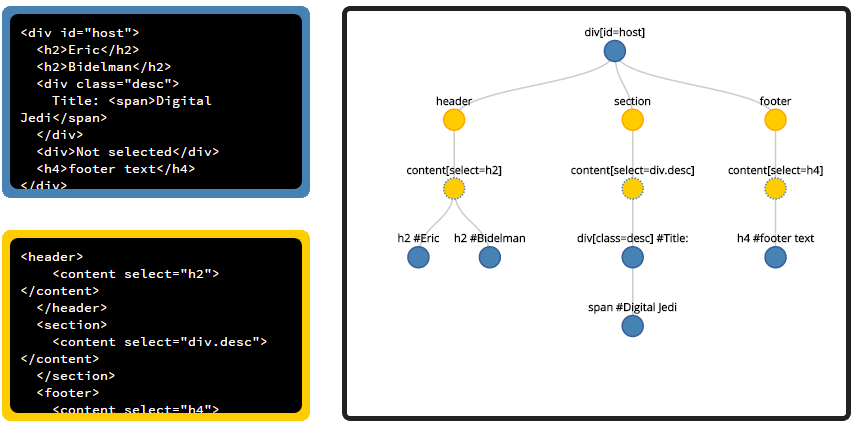

Installer Grunt
- Installer NodeJS (nodejs.org)
- Åpne et terminal/shell-vindu
-
npm install -g grunt-cli - Last ned prosjektet bit.ly/ciberweb
- Åpne prosjektmappen i terminalen
- Kjør webappen med grunt
Introduksjon til
Web Components
Om oss
Program
- Intro til web components
- Pause med pizza
- Polymer
- Den gode nabo
HTML før HTML5

HTML før HTML5
HTML5!

HTML5
<!DOCTYPE html>
<html>
<head></head>
<body>
<header></header>
<nav></nav>
<section></section>
<article></article>
<aside></aside>
<footer></footer>
</body>
</html>
HTML5
<div class="wrapper">
<header>
<div class="innerheadwrapper">
<div class="header"></div>
<nav></nav>
</div>
</header>
<aside>
<div class="innersidebarwrapper"></div>
</aside>
<article>
<div class="contentwrapper">
<section></section>
<section></section>
</div>
</article>
<footer></footer>
</div>
Hva er likheten?

Problemer?
Tradisjonelt webSIDE syntax
Globale variabler
DOM?
Document Object Model
- Plattform-uavhengig
- Trestruktur / DOM-tre
- Forbindelse mellom kode og layout
- HTML / XML
Globale variabler?
DOM
CSS
Hva gjør man?


Hva hadde vært kjekt?
Web-app-syntaks
Komponenter
Scoping
Fire nye standarder
Templates
Shadow DOM
Custom elementer
HTML import
Templates
Skjult DOM
Overloading script
Skjult DOM
:) Bruker DOM - nettleseren kjenner DOM. Den er flink med den. Lett å klone.
:) Ingen ting blir rendret - ved å legge til display: none blir blokken skjult
:( Selv om innholdet er skult blir det send nettverksforespørsl pga bildet
:( Slitsomt å style og tematisere - En må prefixe alle CSS regler med #mytemplate. Dette blir for slitsomt, og kan bli problemer hvis en side allerede har et element med samme id
Overloading script
:) Ingenting blir rendra - nettleseren rendrer ikke denne blokken fordi <script> har display:none som default.
:) Nettleseren parser ikke script innholdet som JS fordi typen er sett til noe annet enn "text/javascript".
:( Sikkerhetsproblemer - oppmuntrer til bruk av .innerHTML. Run-time string parsing av bruker levert data kan føre til XSS(cross side scripting) sårbarheter.
Templates
Innholdet er skjult i DOM og blir ikke rendret.
Innholdet som er i templaten skal ikke ha sideeffekter. Script blir ikke kjørt, bilder blir ikke lastet, audio blir ikke avspilt, ... før templaten blir tatt i bruk.
Innholdet er ansett som å ikke være i dokumentet. Bruk av document.getElementById() eller querySelector() i hovedsiden vil ikke returnere barnnoder av templaten.
Templater kan bli plassert hvor som helst inne i <head>, <body> or <frameset> og kan inneholde alt innhold som er lovelig i disse elementene.

- Frontend / .NET
- Komplett.no
- UiO
Into the shadow
Skjule støy
Rydde i DOM
Vedlikeholdbart
Into the shadow
//Hent ut template fra tidligere
var template = document.querySelector("#contact-template");
//Hent ut mål-elementet
var host = document.querySelector('contact-wrapper');
//Lag en shadow root-node på mål-elementet
var root = host.createShadowRoot();
//Klon innholdet og barn-noder, og legg til i shadow DOM
var clone = document.importNode(template.content, true);
root.appendChild(clone);
Into the shadow
Insertion points
<template id="contact-template">
Into the shadow
Styling
Adskilt fra resten av DOM
Styling av host/mål-elementet; :host
Tilgang til intern styling; <<<
Into the shadow
Styling - :host
:host {
opacity: 0.4;
}
:host(:hover) {
opacity: 1;
}
:host(:active) {
opacity: 1;
background-color: blue;
}
Into the shadow
Styling - ::shadow
:host {
opacity: 0.4;
}
:host(:hover) {
opacity: 1;
}
:host(:active) {
opacity: 1;
background-color: blue;
}
Into the shadow
Styling - /deep/ <<<
Browser support
Into the shadow
Shadow DOM visualizer

Custom Elementer
- navne-konvensjon
- kan utvide eksiterende html-elementer
- kan benytte seg av templates og shadow dom
- life-cycle callbacks
Custom Elements
<button is="unclickable-button">Ikke prøv å klikk på meg</button>
Life-cycle callbacks
- createdCallback - instans av element opprettet.
- attachedCallback - instans av element lagt til DOM
- detachedCallback - instans fjerne fra DOM
- attributeChangedCallback - atributt på element lagt til/fjernet/endret
HTML imports
Kontakt-app
var proto = Object.create(HTMLElement.prototype);
proto.createdCallback = function() {
var self = this,
opened = false,
template = document.querySelector('#contact-template'),
shadow = this.createShadowRoot(),
clone = document.importNode(template.content, true);
self.addEventListener("click", function(){
var d = shadow.querySelector(".detailed-info");
if(!opened){
d.className = "detailed-info";
} else {
d.className = d.className + " hidden";
}
opened = !opened;
});
shadow.appendChild(clone);
};
document.registerElement('contact-tile', {prototype: proto});
Html imports
Latest commit:
Latest commit:
<time is="relative-time" datetime="2015-01-27T16:00:00.000Z">
Oops! This browser doesn't support Web Components.
</time>
Imports
Ulemper
Mye overhead, ikke deklarativt
Tidlig fase
Dårlig nettleserstøtte
Polymer
Hvorfor Polymer?

Hvorfor Polymer?
Arkitektur
Arkitektur

Arkitektur
Arkitektur - Foundation
Polyfills for kjente egenskaper:
- Shadow DOM
- Custom Elements
- HTML Imports
- ++
Arkitektur
Arkitektur
Arkitektur
Syntaks
Syntaks - Vanilla
Deklarer element
Bruk element
Syntaks - Polymer
Deklarer element
Bruk element
Syntaks
Attributes
Når man deklarerer et polymer-element har polymer reservert noen atributter:
- name - registrer navnet på elementet
- attributes - publiserte atributter
- extends - om man utvider eksisterende elementer
- noscript - om man lager et element uten behov for js
- constructor - navn på javascript constructor, om man ønsker new CustomElement() i js.
Syntaks
Attributes
Polymer({ displayDetails: false, favorite: false });
Polymer({ publish: { displayDetails: { value: false, reflect: true }, favorite: { value: false, reflect: true } } });
{{ Expressions }}
Gjøre enkle verdi konsepter
Kan ikke legge til HTML ved å bruke expressions
Hvor mange GIFs har Morten?
Morten har {{ folders.gif.length }} gifs
Morten har 9001 gifs
Touch events
Syntaks
Data binding
Data binding - to-veis
{{name}} studerte på {{education}}
Data binding - iterativt
Data binding - if
Data binding - eksplisitt binding
Data binding - attributter
- Stort sett enveis
- Toveis på input-elementer
Data binding - input-verdier
- input: value, checked
- option: value
- select: selectedIndex, value
- textarea: value
Data binding - published properties
Navn: {{name}}
Hva heter du?
Lifecycle callbacks
| Spec | Polymer | |
|---|---|---|
| createdCallback | created | |
| - | ready | The <polymer-element> has been fully prepared (e.g. shadow DOM created, property observers setup, event listeners attached, etc). |
| attachedCallback | attached | |
| - | domReady | Called when the element’s initial set of children are guaranteed to exist. This is an appropriate time to poke at the element’s parent or light DOM children. Another use is when you have sibling custom elements (e.g. they’re .innerHTML‘d together, at the same time). Before element A can use B’s API/properties, element B needs to be upgraded. The domReady callback ensures both elements exist. |
| detachedCallback | detached | |
| attributeChangedCallback | attributeChanged |
Elementer
Core
Paper
++
Core
Paper
Google-elementer
Google-elementer
Google-elementer
Polymer Designer
Ulemper
Manglende dokumentasjon
Fortsatt under utvikling
Uferdig feilhåndtering
Spørsmål?
Jobb?
Nina Orucevic / nina.orucevic@ciber.com